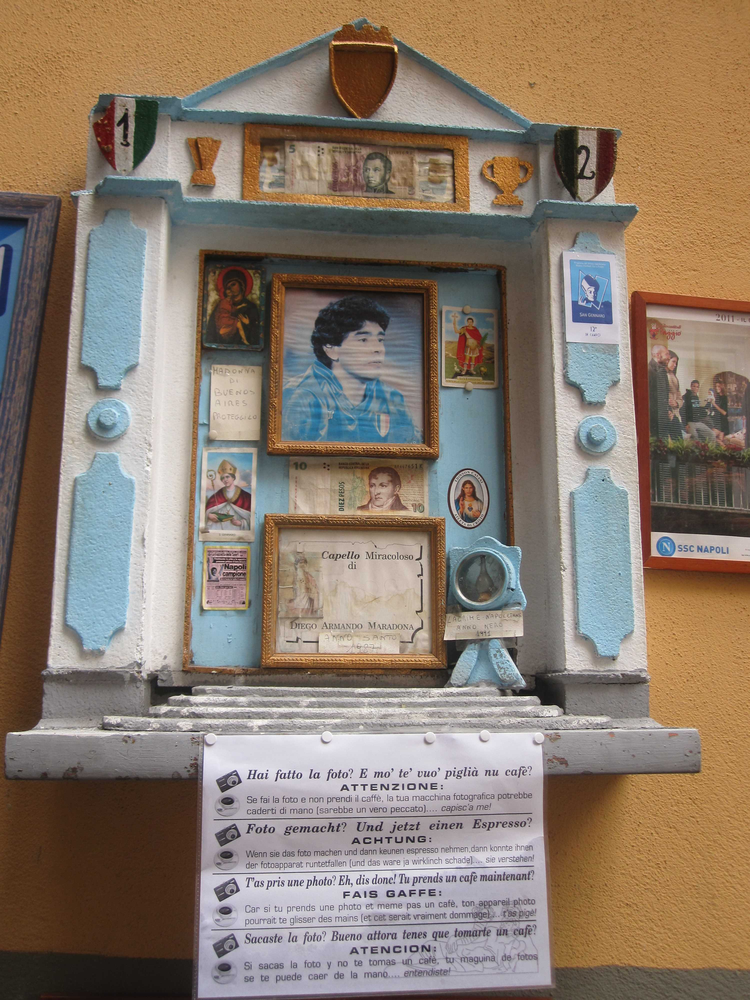
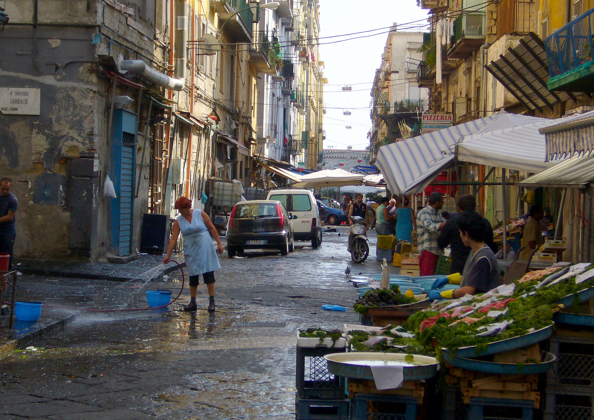
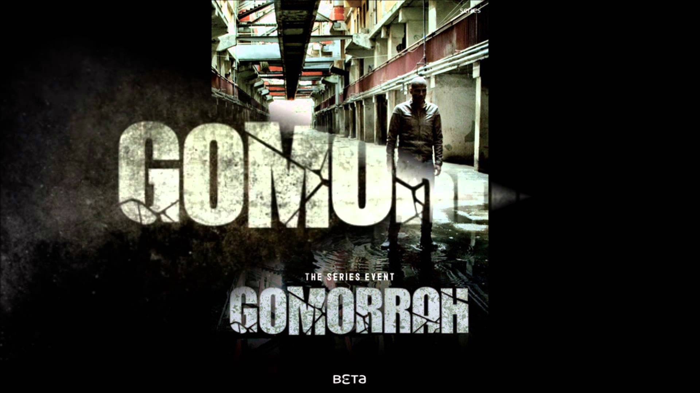

Last month I went back to my hometown, Naples, for New Year’s Eve. Meeting with family and showing the city to girlfriend. A very enjoyable week, I have to say, fun, drinks, good food, visiting as a tourist your old home and rejoining with 2 lovely cats at home :)
The trip reinforced my love-hate relationship with Naples. The food is outstanding, it is really, really hard to find another city with same quality food as Naples, no doubts. People are generally warm and welcoming, open for a chat at any moment and with a hint of humanity that you don’t get that often in north Italy (your mileage may vary, of course). The city is artistically rich, beautiful in a decadent way, there are still plenty of unknown to tourists places to discover, the view from Posillipo or the Vesuvio is breathtaking and art is everywhere around you, as usual in Italy. Cheap prices to eat out, a new, modern metro system and the best pizza in the world complete the offer of the city to visitors. It is also nearly impossible to find another city in the world which has the same quantity and quality of day trip to make: from Pompeii (and Ercolano), to Vesuvio, to Capri, Sorrento, the Amalfi coast with Positano and Caserta with its “italian Versailles”.
This is the love part. I’d add, which is personal, memories and a lively musical background that no other city in Italy can offer. Yes, no other, only Naples has songs in neapolitan, its dialect, that are regularly sang by the best tenors/sopranos all around the world for more than a century. Everybody knows ‘O Sole Mio or ‘O Surdato Innamurato. Italian music, well renowed for its melodies and good voices, was sparkled in late 19th century by Neapolitan music after all.
Oh, and Maradona. Which is another name for God, didn’t you know? ;) (it has even a Church)

But then there’s the hate part, which inevitably presents itself after a few days and the “honeymoon” effect of the first moments has passed. In just a week I faced, in no particular order:
- taximen who claimed they were making you a favour to carry you back home, in the suburbs. Get my money and shut up, please
- ice creams thrown away on the streets on a regular basis (what’s wrong with a nice gelato people?)
- people walking in all directions, with no apparent final destination. You have to go left, and then right, and then walk in the center, randomly, just because some people have no idea where they’re going to
- speaking of which, nobody has a clue how to find some monuments because there are no signs indicating them. And good luck finding any signs that are in english…
- no respect whatsoever for normal rules on the streets. You go where you want and stop where and when you want, this is the only rule accepted by everybody in Naples. Clearly driving becomes an hellish experience as you don’t have any right to pass before any other driver, you have to take that right from the other driver or he/she’ll take it from you. It’s like a Sergio Leone western with cars instead of guns
- road surfaces are uneven. Holes, access to sewage system/electrical cables/telecommunication cables/water and different kinds of pavements make it impossible to find a road that has more than half a meter 100% straight. It is amazing how it is possible to repair roads every few months and still not having a single one that is really straight. In Naples roads are repaired to fix the previous repairing, which in turn fixed an even older one. It is a never ending story
The astute reader may be thinking now that all this applies to other italian cities too. That’s true. Any big city, at least from Rome (included) to south, has the same problems as Naples, if not in some areas even worse. But none of them has been a splendid city just a little more than 100 years ago and rapidly decayed after it was annexed to the Kingdom of Italy.
I’m sure now many will think that Rome has had the same destiny of Naples. Flourished for centuries until the Kingdom of Italy became a reality. Wrong. Rome hadn’t been politically and economically relevant since Charlemagne era, at least, 1200 years earlier. The only rich peoples were priests and local aristocracy, and they fuelled a lot of art, as you can see today, but normal peasants were poor, merchants didn’t cross it as it was not on the sea and had nothing peculiar to offer to foreign investors. The Papal State was also of no military importance and never grow up more than the size of 2-3 regions of nowadays Italy. As an example, Florence, to the north, was as much as magnet for artists as Rome but its princesses married emperors and kings all around europe and it had a play in many international alliances from Middle Age till the Renaissance, if not even after. Rome has been in a decaying state since 4-500 years at least. Which is sad as it is an amazingly beautiful city. But I digress…
Naples, instead, has been important throughout its history. From Roman times, when it hosted the main imperial fleet, was a center of Greek-Hellenistic culture and considered the capital of the best region in Italy (“Campania Felix” anyone?), through Middle Ages with the founding of the first public university of the world in 1224, a growing population (up to 300.000 inhabitants around 16th century), and being the biggest and richest city of the biggest realm of the time, Spain, second only after its capital, Madrid. In more recent times, the richness and importance of the city was shown by the building of the first modern opera house among the biggest italian cities, San Carlo theatre (1737, yes, before La Scala in Milan), the very first railway in Italy, Napoli-Portici, and second in the world (1839), the oldest volcanology observatory in the world right on the way to Vesuvio’s top (1841) and being the biggest italian city, and third in Europe after Paris and Vienna, for nearly 300 years.
Today Naples is instead more famous for its dirtiness

the powerful organized crime (Camorra or “Il Sistema” as its adherent calls it), magistrally depicted in the movie and then tv series Gomorra

commonly sneered about by northern italians, to racism-levels

and lack of jobs and general lower than average salaries.
Why did it happen? It goes beyond the scope of this post to explain it, countless books have been written on the history of south Italy after the reunification of Italy. Google “la questione meridionale” if you can read italian to get illuminated. What makes me suffer is that many neapolitans don’t know even half the informations I’ve exposed here and half of them don’t feel any proudness nor enthusiasm in being born in such a city. They suffer from a mix of ignorance, melancholia and lack of hope. It’s so common to think that “Naples has always been like this” that it’s astounding that the city can still produce great artists and attract big investors (latest one, Apple). It shows that among all the pain, problems and corruption, the population is inventive, smart and civil after all, at least a good slice of it. There’s a strong identification between the population and the city, many neapolitans consider themselves “first neapolitan, then italian”. It’s a me-against-the-others attitude, born out of feeling of having being robbed of a glorious past and given a mediocre present. From the capital of the most powerful kingdom in the italian peninsula to the third city of a republic whose powers and interests lay mostly in Rome (political) and Milan (economical). Naples was left with nothing to be proud of in just a couple of decades after the italian reunification, not even the role of the most important harbour (that title goes to Genoa nowadays).
Today the first quality that comes to mind about Naples is having the best pizza

Very little for a city with such a long and prominent past. It is of no surprise then that neapolitans have such a strong feeling of revenge against the North italians who “stole our money”, “sneer at us” and “emarginate us”. That feeling was embodied in sport, when the greatest footballer of all times, Diego Armando Maradona, led Napoli football team to win the italian league twice against the “evil” powers of the north, Juventus, Inter and Milan. It had never happened before for a team south of Rome to win the league and that event back in the ’80s was and still is the most dear in the minds of every neapolitan. If Naples couldn’t compete anymore as a political entity, in the industries or in commerce, at least it could in football. Years of shaming and discomfort were fuelled in the victories on the pitch and the main author of them was raised to God-like levels by the local population. It was a “si, se puede!” moment for the entire city, which though quickly returned to normality after Maradona left the club. Ephemeral, fleeting, transitory. Sure. But powerful, very powerful.
This is what pains me the most. That neapolitans could summon so much joy and enthusiasm for sport successes but can’t to make the city better. We can fight against something, to be better than somebody who we feel has mistreated us, but we can’t fight for ourselves, to improve our standard of living. This we’d need to learn to be back where we were. We lost the capacity to believe that just ourselves can make our future great, without waiting for help from the central government or saints.
“Se Dio vuole” is a very common phrase to be heard in Naples. It means, “if God wants”. At which I always reply: “why shouldn’t he want?”.
Photos courtesy: Napoli Lungomare, Napoli Street, Pizza